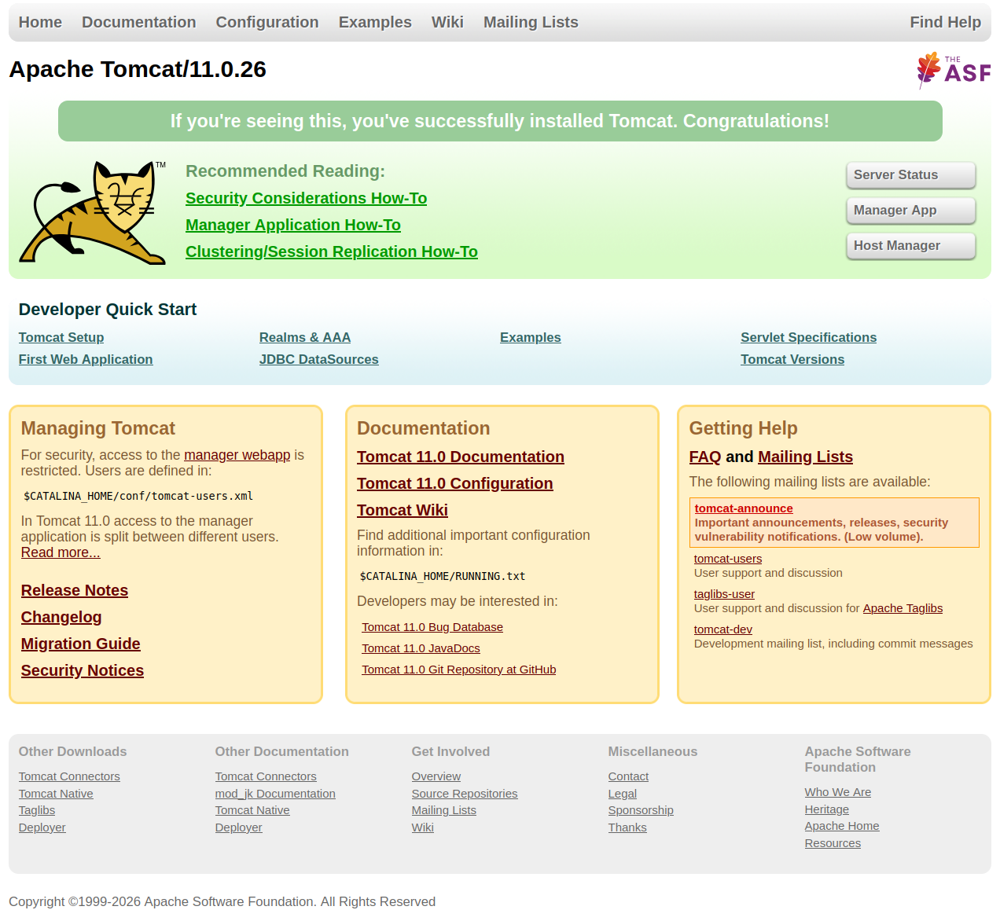

Servidor de aplicaciones Tomcat
El servidor de aplicaciones Tomcat es un servidor de aplicaciones de código abierto, desarrollado por la Apache Software Foundation, que implementa las especificaciones de Java Servlet y JavaServer Pages (JSP). Es uno de los servidores de aplicaciones más populares y utilizados en el mundo del desarrollo web.
Este servidor de aplicaciones es ligero y fácil de usar, lo que lo hace ideal para el desarrollo y despliegue de aplicaciones web basadas en Java. Además, Tomcat ofrece características avanzadas como la gestión de transacciones, la seguridad y la integración con bases de datos y otros servicios.
Algunas de sus características principales son:
-
Compatibilidad con Java: Tomcat es compatible con las especificaciones de Java Servlet y JSP, lo que permite a los desarrolladores crear aplicaciones web dinámicas utilizando estas tecnologías.
-
Ligero y fácil de usar: Tomcat es un servidor de aplicaciones ligero y fácil de usar, lo que lo hace ideal para el desarrollo y despliegue de aplicaciones web basadas en Java.
-
Gestión de transacciones: Tomcat ofrece soporte para la gestión de transacciones, lo que permite a los desarrolladores garantizar la consistencia y la integridad de los datos en sus aplicaciones web.
-
Seguridad: Tomcat ofrece características de seguridad avanzadas, como la autenticación y autorización de usuarios, la protección contra ataques de denegación de servicio (DoS) y la gestión de certificados SSL.
-
Integración con bases de datos: Tomcat ofrece soporte para la integración con bases de datos y otros servicios, lo que permite a los desarrolladores crear aplicaciones web más complejas y funcionales.
-
Escalabilidad: Tomcat es capaz de manejar múltiples solicitudes simultáneamente, lo que permite a los desarrolladores crear aplicaciones web escalables y de alto rendimiento.
-
Comunidad activa: Tomcat cuenta con una comunidad activa de desarrolladores y usuarios, lo que permite a los desarrolladores obtener soporte y compartir conocimientos sobre el uso del servidor de aplicaciones.
Instalación y configuración de Tomcat
En primer lugar, vamos a ver los pasos para poder instalar y configurar tomcat. Hay que instalar Java Development Kit (JDK) en el sistema, ya que Tomcat requiere Java para funcionar. Puedes descargar e instalar la versión más reciente del JDK desde el sitio web oficial de Oracle o utilizar una distribución de OpenJDK.
A continuación, descarga la versión más reciente de Apache Tomcat desde el sitio web oficial de Apache Tomcat. Asegúrate de elegir la versión compatible con tu sistema operativo y la versión de Java que has instalado.
Una vez descargado el archivo comprimido, descomprímelo en un directorio de tu elección. Por ejemplo, puedes descomprimirlo en /opt/tomcat en sistemas Linux o en C:\tomcat en sistemas Windows.
Configuración de variables de entorno
Aunque por defecto no es necesario configurar variables de entorno para ejecutar Tomcat, es recomendable establecer la variable de entorno JAVA_HOME para que apunte al directorio donde se encuentra instalado el JDK. Esto permitirá a Tomcat encontrar y utilizar la versión correcta de Java.
Estas variables de entorno son:
- JAVA_HOME: Debe apuntar al directorio donde se encuentra instalado el JDK.
- CATALINA_HOME: Debe apuntar al directorio donde se encuentra instalado Tomcat.
- CATALINA_BASE: Debe apuntar al directorio donde se encuentra la instancia de Tomcat que deseas ejecutar. Por defecto, este valor es el mismo que
CATALINA_HOME, pero puedes configurarlo para ejecutar múltiples instancias de Tomcat en el mismo sistema. - CATALINA_OPTS: Permite establecer opciones de configuración adicionales para la JVM utilizada por Tomcat, como la cantidad de memoria asignada o las opciones de depuración.
Arranque y parada de Tomcat
Para ejecutarlo, abre una terminal o línea de comandos y navega hasta el directorio bin dentro del directorio de Tomcat. Ejecuta el script startup.sh en sistemas Linux o startup.bat en sistemas Windows para iniciar el servidor de aplicaciones.
En este caso, puedes abrir un navegador web y acceder a la URL http://localhost:8080 para verificar que Tomcat se ha iniciado correctamente. Deberías ver la página de bienvenida de Tomcat.

Para detener el servidor de aplicaciones, ejecuta el script shutdown.sh en sistemas Linux o shutdown.bat en sistemas Windows desde el mismo directorio bin. Esto detendrá el servidor de aplicaciones de manera segura.